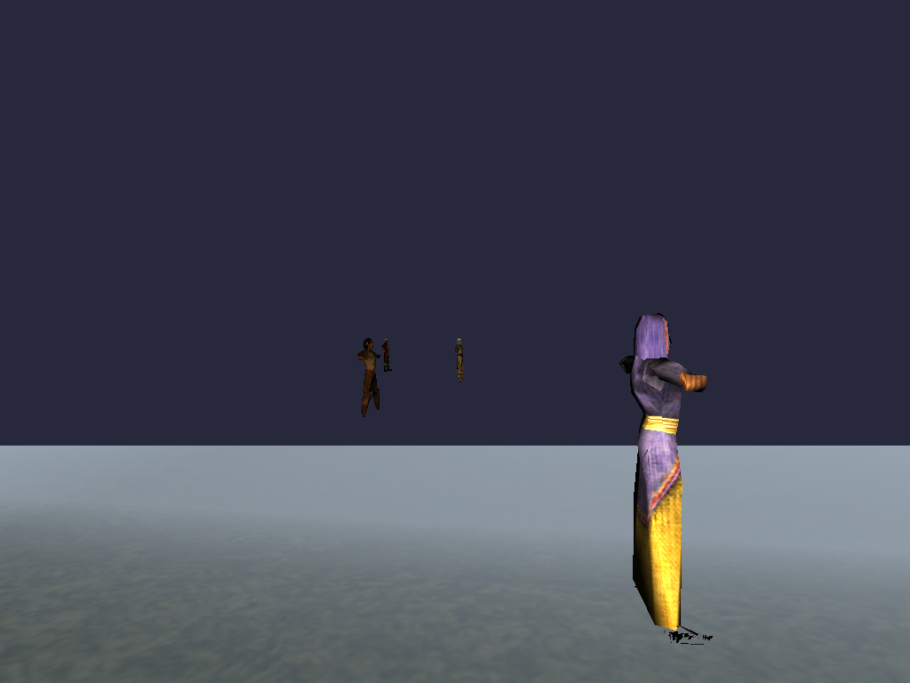
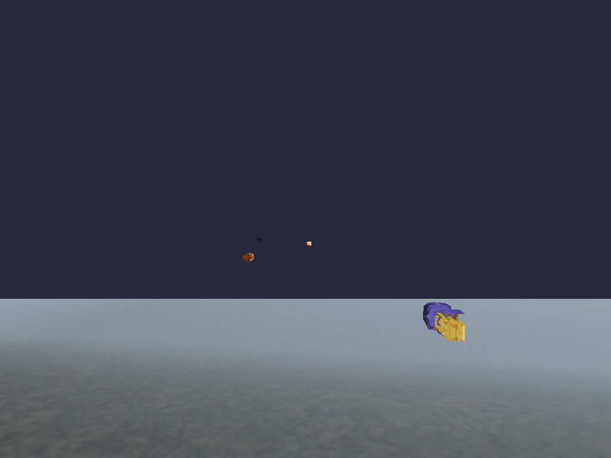
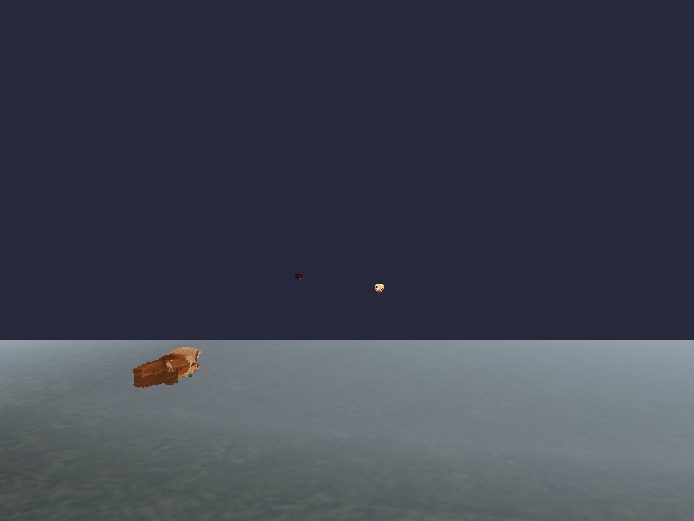
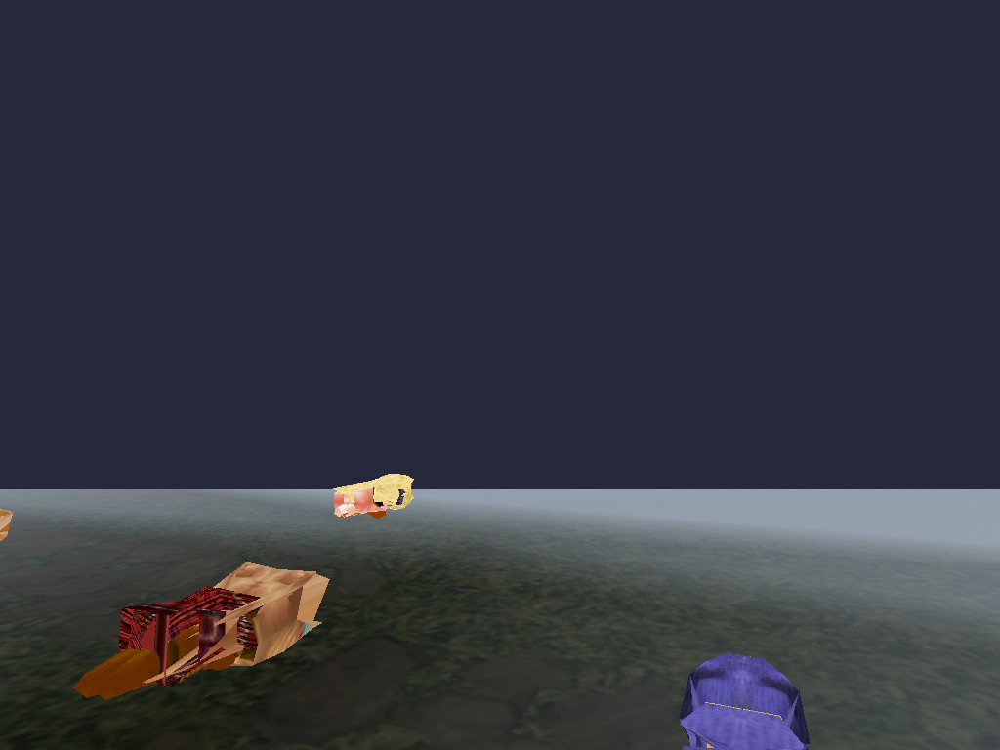
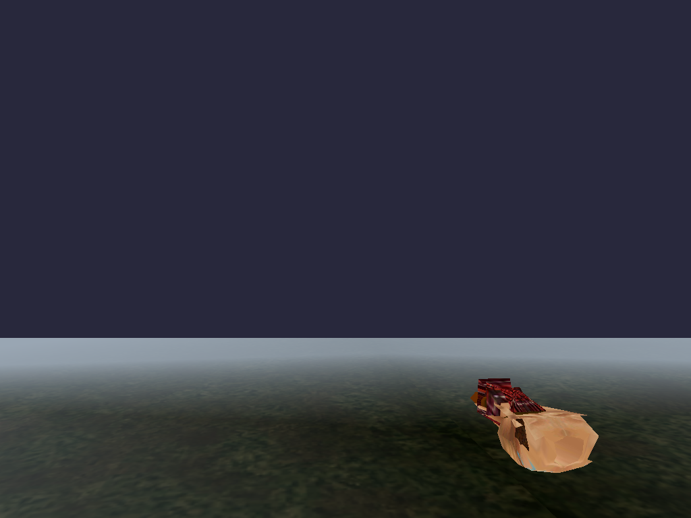

qeynos2, --entities 6 --seed 42, gles2-x86 llvmpipe under Xvfb. Static control uses the
identical command minus --animate.
1. Static (no --animate) — correct reference

static_f15.png — far view, f15. Correctly formed, correctly
textured character silhouettes (small, distant).static_closeup_f35.png — --orbit-radius 15 close-up,
f35. A perfectly-formed barbarian: face paint, kilt, proportions all correct.
2. Animated (--animate) — the crumple, reproduced

animate_f15.png — same camera/entities as static_f15, only
--animate added. Entities render as small collapsed blobs, not recognizable figures.

animate_f25.png — f25. One entity is a flattened brown mass
lying on the ground — the "crumpled heap" the plan describes.animate_closeup_f35.png — same close-up camera as
static_closeup_f35.png. The SAME barbarian is now a compact, folded blob: skin-tone mass topped with a
wedge of the plaid kilt texture. Geometry and texturing are otherwise intact (correct materials, just
wrong vertex positions).

animate_frame0_multi_race.png — frame 0 of a
10-frame run (before the per-frame OnAnimate loop even executes more than once). Already crumpled — three
different races' entities all show the same collapsed-blob symptom immediately, not something that
develops gradually over many frames.
3. Prime suspect tested and eliminated

animate_closeup_f35_with_vertexmapping_patch_applied.png — identical camera/frame/seed, with
refactor/scratch/P08d_vertexmapping_one_to_many.patch (the parked
VertexMapping→VertexMappingList one-to-many fix) applied and rebuilt. Byte-for-byte pixel-identical
to animate_closeup_f35.png (verified via PIL ImageChops diff: bbox=None, max diff=0, 0 differing pixels).
The UV-seam duplicate-vertex-freezing bug is real but is NOT the cause of this crumple.
See the P12 plan's Review section (refactor/P12_animate_root_cause.md) for the full
bisection writeup, exclusions, and STOP-condition narrowing.